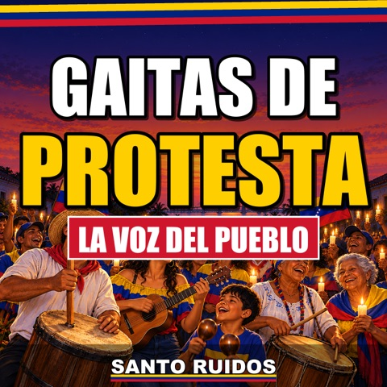

Canciones y letras de Santo Ruidos
Todas las gaitas de Santo Ruidos con su letra completa: las de protesta y las de toda la familia. 80 canciones, 63 con video.

Álbum · 22 canciones
Gaitas de Protesta: La Voz del Pueblo
22 gaitas zulianas de protesta: la luz que se va, los enchufados, las maletas de Delcy y un pueblo que no se calla.
- Se Llevaron a Nicolás (Y Se Fue la Luz)3:59
- Nos Dejaron la Hoja3:59
- Bolichico Premiado4:29
- Llegó Sin un Kiosco3:59
- Lo Que Sirve Es el Enchufe3:59
- Revolución Bonita4:01
- Puro Letrero3:50
- Su Cara con Mi Plata3:59
- Se Fue Nicolás (Y la Luz También)3:28
- El del Mazo4:00
- Echando Broma3:59
- La Ruleta de la Luz4:00
- El Aguinaldo de 15 Centavos3:59
- El Reloj de Delcy3:59
- Muy Verde3:59
- La Cacerola es mi Furro3:59
- 22 Trimestres3:59
- La Puerta Giratoria3:59
- Sentado en el Petróleo3:59
- La Foto de Delcy3:59
- La misma oscuridad4:00
- La Maleta al Revés3:59
Álbum · 31 canciones
Gaitas de Protesta: La Voz del Pueblo, Vol. 2
Las gaitas nuevas de 2026: memoria, presos políticos, diáspora, maestros, Navidad y el orgullo de cada región, de Maracaibo a los Andes, Oriente, Caracas, el llano y Falcón.
- La Ley del Bozal3:22
- No Olvidamos3:26
- Tenemos el Paraíso3:51
- ¿Y la Plata Dónde Está?3:18
- Mansas Palomas3:45
- A Limpiar Pocetas4:00
- Ojo con el Camaleón3:23
- Pasaporte Vencido3:48
- La Vacuna3:50
- Amnistía con Tobillera3:58
- Quinientos Seis3:57
- ¿Que lo Supere?3:33
- Amanecer Gaitero2:56
- Misa de Aguinaldo2:54
- La Carta al Niño Jesús2:55
- El Estreno2:52
- Maracucho Hasta la Médula2:55
- Larense de Pie3:15
- Oriente con Sabor3:32
- Caraqueño de Barrio3:06
- Coleando3:22
- Médano y Chivo3:17
- Un Venezolano en Cualquier Parte3:01
- ¡Devuélvase!2:53
- Mi Abuela Jubilada2:52
- Andino Callado3:19
- La Sapoara3:24
- Ni un Megavatio2:51
- La Cola de la Gasolina2:55
- La Luz Es la Gente3:10
- Venezuela Va a Nacer3:21
Álbum · 27 canciones
Gaitas Pa' Toda la Familia
27 gaitas para cantar con toda la familia: la Navidad venezolana (las hallacas, el pan de jamón, el Niño Jesús y el abrazo de fin de año), la bendición de mamá, el grupo de la familia, la arepa, la pelota entre Caracas y Magallanes, la fe y las ganas de vivir.
- La Maleta de las Doce3:07
- Las Hallacas de Mi Mamá3:00
- Pasas Sí, Pasas No2:51
- Este Año Sí3:22
- El Abrazo por Pantalla2:58
- Ábrele la Puerta al Niño3:24
- Son las Doce, Ya Nació3:25
- No Hizo Falta Más Nada3:18
- Lo Tenía Todo3:22
- No Se Fue, Se Adelantó3:40
- Bendición, Mamá2:57
- El Grupo de la Familia2:56
- Cumpleaños con Gaita3:05
- Ruge, León3:12
- Navega, Magallanes2:45
- La Arepa No Se Discute3:06
- El Venezolano Resuelve3:12
- El Brindis (Salud, Dinero y Amor)3:01
- De Grano en Grano3:16
- Patria Es la Gente3:17
- Con Miedo y Todo2:51
- Ni Muy Muy Ni Tan Tan2:56
- El Salvavidas de la Fe3:05
- El Miedo Avisa, No Manda3:18
- Nacimos Para Querer3:12
- Yo Era el Control Remoto2:52
- El Muchacho Sigue Adentro3:01
Más letras de gaitas
Lee más letras de gaitas venezolanas nuevas: cada letra completa, verso por verso, con su video.